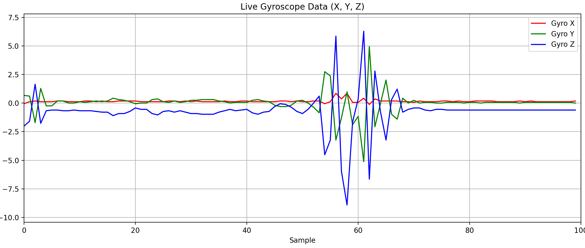
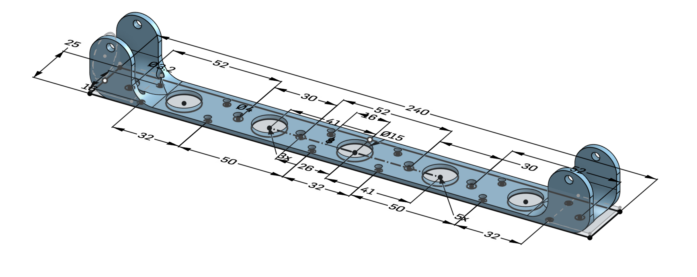

What Makes It Special

Smart Recognition
Advanced algorithms distinguish real steps from simple supports, providing accurate activity monitoring for assisted walking.

Universal Compatibility
3d printed design that can be adapted for any standard quadripod cane, making it accessible to existing users.

Open Source
Transparent development focused on accessibility and continuous improvement. Plug and play thanks to Arduino Modulino®